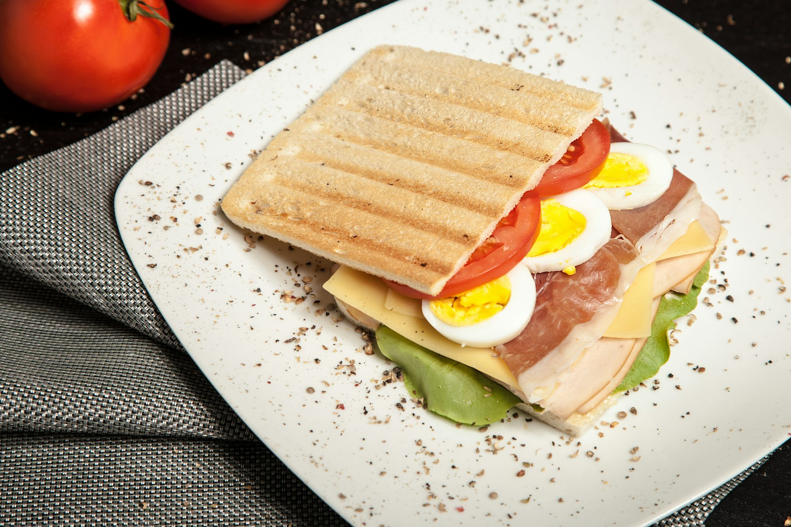

Italian Cuisine: A Symphony of Flavors
Italy is synonymous with rich flavors, fresh ingredients, and time-honored culinary traditions. At the heart of Italian cuisine are staples like pasta, olive oil, and tomatoes. Each region in Italy offers distinct dishes, influenced by local ingredients and historical factors.
Pasta is perhaps the most famous Italian dish, available in countless shapes and sizes. From the simple yet elegant spaghetti aglio e olio to the hearty lasagna, pasta can be prepared in various ways. Fresh ingredients like basil, garlic, and parmesan cheese elevate these dishes, making them a feast for the senses.
Another highlight of Italian cuisine is pizza, which originated in Naples. Traditional Neapolitan pizza features a thin crust topped with fresh tomatoes, mozzarella cheese, and basil. The balance of flavors and the high-quality ingredients are what make this dish so beloved around the globe.
Mexican Cuisine: A Colorful Celebration
Mexican cuisine is vibrant, bold, and diverse, reflecting the country’s rich cultural heritage. It combines indigenous ingredients with Spanish influences, resulting in a unique culinary identity. Key ingredients include corn, beans, chili peppers, and avocados.
Tacos are a quintessential Mexican dish, with endless variations. Whether filled with grilled meats, fresh seafood, or vegetables, tacos are often topped with salsas, cilantro, and lime for an explosion of flavors. Another beloved dish is mole, a complex sauce made with various ingredients, including chili peppers, chocolate, and spices, often served with chicken or turkey.
Chinese Cuisine: A Harmonious Balance
Chinese cuisine is renowned for its variety and depth, with regional differences that reflect the country’s vast geography and cultural diversity. Key concepts in Chinese cooking include balance, harmony, and freshness.
In the north, dumplings are a staple, often filled with meat and vegetables. In contrast, southern regions favor dim sum, a variety of small dishes served in steamer baskets or on small plates. One of the most iconic dishes, Peking duck, features crispy skin and tender meat, served with pancakes and hoisin sauce, embodying the skill and artistry of Chinese cooking.
Indian Cuisine: A Melange of Spices
India’s culinary landscape is a vibrant blend of spices, herbs, and flavors that vary significantly from region to region. Indian cuisine often features a mix of vegetarian and meat dishes, with rice and bread as staples.
Curry is a hallmark of Indian cooking, showcasing the country’s diverse spices like cumin, coriander, and turmeric. Each region has its unique take on curry, whether it’s the rich and creamy butter chicken from North India or the coconut-based fish curry from the South.
Another important aspect of Indian cuisine is the tandoor, a traditional clay oven used to cook breads like naan and meats like kebabs, imparting a distinct smoky flavor that is hard to replicate.
Japanese Cuisine: Precision and Elegance
Japanese cuisine emphasizes seasonal ingredients, simplicity, and presentation. It is known for its artistry and meticulous techniques that showcase the natural flavors of ingredients. Key staples include rice, fish, vegetables, and soy products.
Sushi is perhaps the most famous Japanese dish, with its delicate balance of vinegared rice, fresh fish, and vegetables. It comes in various forms, such as nigiri (sliced fish over rice) and maki (rolled sushi). Ramen, a hearty noodle soup, has also gained international acclaim, with countless regional variations featuring different broths and toppings.
Thai Cuisine: A Symphony of Tastes
Thai cuisine is celebrated for its balance of sweet, sour, salty, and spicy flavors, creating a harmonious taste experience. Fresh herbs and spices play a crucial role in defining Thai dishes, with ingredients like lemongrass, kaffir lime, and chili peppers being essential.
Pad Thai, a stir-fried noodle dish, is a popular representation of Thai cooking, typically made with rice noodles, eggs, tofu or shrimp, and topped with peanuts and lime. Another staple is Tom Yum soup, known for its fragrant broth and bold flavors, often featuring shrimp, mushrooms, and fresh herbs.
French Cuisine: The Art of Gastronomy
French cuisine is synonymous with sophistication, technique, and flavor. It is often regarded as the foundation of Western culinary arts, emphasizing the importance of high-quality ingredients and meticulous preparation.
Coq au Vin is a classic French dish, featuring chicken braised with wine, mushrooms, and onions. Croissants and macarons are iconic pastries, showcasing the skill and artistry of French baking. The French culinary tradition also places a strong emphasis on sauces, with reductions and emulsions being central to elevating dishes.
Mediterranean Cuisine: A Healthy Approach
Mediterranean cuisine encompasses a range of culinary traditions from countries bordering the Mediterranean Sea, including Greece, Italy, and Spain. It is characterized by an abundance of fruits, vegetables, whole grains, and healthy fats, particularly olive oil.
Greek salad, with its fresh vegetables, feta cheese, and olives, is a refreshing staple. Paella, a rice dish from Spain, is often cooked with seafood or meats and flavored with saffron, showcasing the region’s rich culinary heritage.
Conclusion: A Culinary Adventure Awaits
Exploring global cuisines offers a unique opportunity to experience different cultures through food. Each cuisine tells a story, reflecting the history, geography, and traditions of its people. By trying out new recipes and ingredients, you can embark on a culinary adventure from the comfort of your kitchen.
So gather your ingredients, embrace new flavors, and let your taste buds travel the world. Whether you're whipping up a classic Italian pasta dish or experimenting with spicy Thai flavors, the possibilities are endless. Happy cooking!